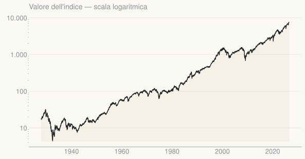
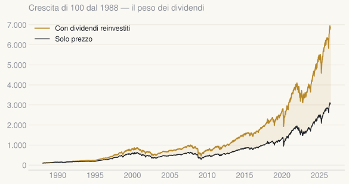
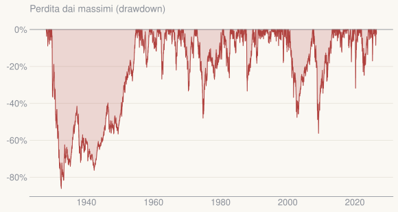
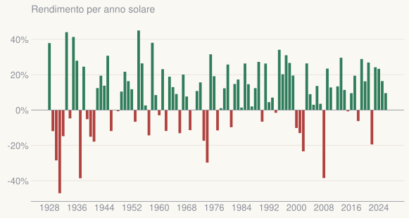
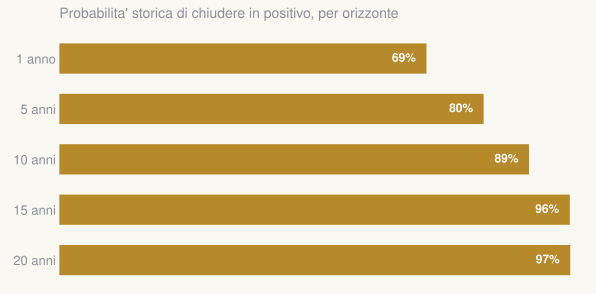
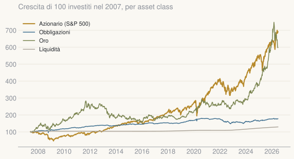

Andamento storico
Una crescita di lungo periodo
Nonostante guerre, recessioni e crisi, sul lungo periodo l'indice ha sempre superato i massimi precedenti.
$
da $100 investiti nel
+
rendimento medio annuo
Un indice che misura l'andamento delle circa 500 maggiori società quotate statunitensi. È il riferimento più usato al mondo per rappresentare il mercato azionario USA.
Nonostante guerre, recessioni e crisi, sul lungo periodo l'indice ha sempre superato i massimi precedenti.

L'indice di prezzo ignora i dividendi. Reinvestendoli, dal il capitale finale è più che raddoppiato.

Il rendimento non è gratis: cali profondi sono ricorrenti. Vanno messi in conto, non temuti.

I singoli anni sono imprevedibili, ma la maggioranza si chiude in guadagno.

Più a lungo si resta investiti, più alta è storicamente la probabilità di chiudere in guadagno.

Dal , l'azionario è il principale motore di crescita; obbligazioni e liquidità danno stabilità a costo di un rendimento minore.
| Asset class | Rend. annuo | Volatilità |
|---|---|---|
| Azionario (S&P 500) | ||
| Oro | ||
| Obbligazioni | ||
| Liquidità |

L'S&P 500 ha premiato storicamente gli investitori pazienti e diversificati. Il nostro ruolo è allineare orizzonte, rischio e aspettative di ogni cliente.
Analisi rigenerata automaticamente · ultimo aggiornamento
Nota: l'indice di prezzo non include i dividendi; il rendimento totale reinvestito è superiore. I rendimenti passati non sono garanzia di risultati futuri. Documento a fini informativi, non consulenza personalizzata.